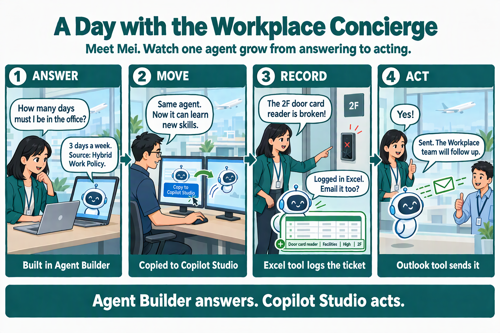

A day with the Workplace Concierge
08:30 · Meet Mei
One agent.
One working day.
One working day.
Watch Mei's agent grow from answering workplace questions to completing work.
MEI
How many days must I be in the office?1 · Answer
08:31 · Agent Builder
Start with an agent that knows.
MEI
How many days must I be in the office?WORKPLACE CONCIERGE
3 days a week.Source: Hybrid Work Policy
Mei
→
Agent Builder
→
Workplace knowledge
2 · Move
11:00 · The agent grows
Now extend the agent so it can act.
Agent Builder
Answer questions using workplace knowledge.
→
Copilot Studio
Add tools and connect the experience to business systems.
The journey moves from understanding the work to performing parts of the work.
3 · Record
14:20 · Something goes wrong
Mei spots an issue on 2F.
MEI
The 2F door card reader is broken.WORKPLACE CONCIERGE
I can log a ticket. Let me capture the details.Copilot Studio · Understand
One sentence becomes structured data.
IssueDoor card reader
TeamFacilities
PriorityHigh
Floor2F
Issue details
→
Workplace Concierge
→
Excel tool
Connecting to Workplace Issue Tracker…
Excel tool · Add a row
Watch the ticket get written.
Agent
→
Excel · Add a row
Workplace Issue TrackerConnected
Issue
Team
Priority
Floor
Door card reader
Facilities
High
2F
✓ New ticket recorded successfully
4 · Act
14:21 · Continue the workflow
The agent proposes the next useful action.
WORKPLACE CONCIERGE
Ticket recorded. Would you like me to notify the Workplace team?MEI
Yes.Mei confirms
→
Agent
→
Outlook tool
Outlook tool · Send email
One confirmation. One more action.
New message
Subject: 2F door card reader issue
The door card reader on 2F has been reported. A high-priority Facilities ticket has been logged for follow-up.
Send✉ Sent to Workplace team ✓
The complete journey
Everything Mei did today, in one view.

Agent Builder answers. Copilot Studio acts. Now let's build Mei's Workplace Concierge.
Hands-on lab · MS-4022
From Agent Builder to Copilot StudioBuild the Cathay Workplace Concierge step by step: answer, move, record and act.